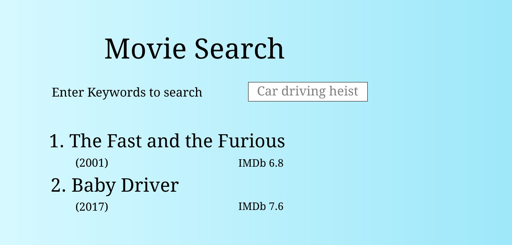
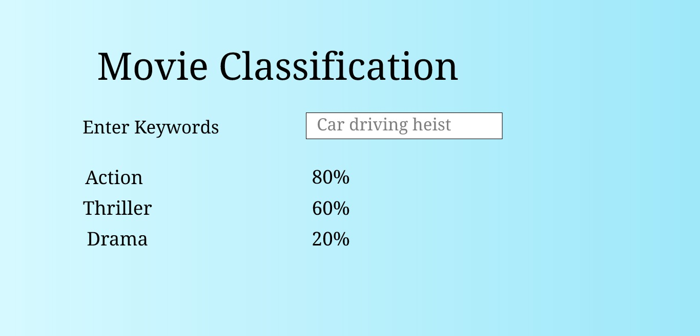
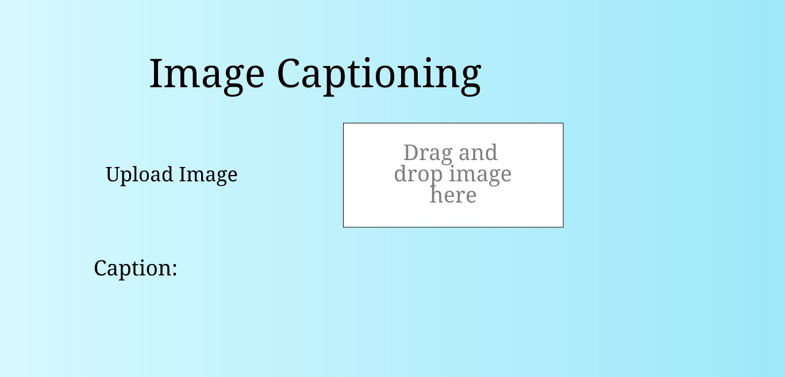

Data Mining Term Project (Fall 2019)
Movie Search and Classifier
Project Proposal
Introduction
The project for the course is a web application to search for movies by keywords matching from the synopsis, classifying a movie by genre based on the description given by the user, and image captioning.
Dataset
The dataset contains metadata for 45,000 movies listed in the Full MovieLens Dataset. The dataset consists of movies released on or before July 2017. Data points include cast, crew, plot keywords, budget, revenue, posters, release dates, languages, production companies, countries etc.
https://www.kaggle.com/rounakbanik/the-movies-dataset
Why this app
We often spend a lot of time trying to find a movie when we do not know the title of the movie, but we remember just small key points from the plot of the movie. This application makes it easy for users to search movies by taking simple text queries from the users, and returning the best results. This application also lets the user classify the movie by genre based on the description provided by the user.
Similar applications
Search engines of:
- Netflix
- Hulu
- Amazon Prime Video
Sketches
1.

2.

3.
